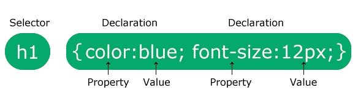
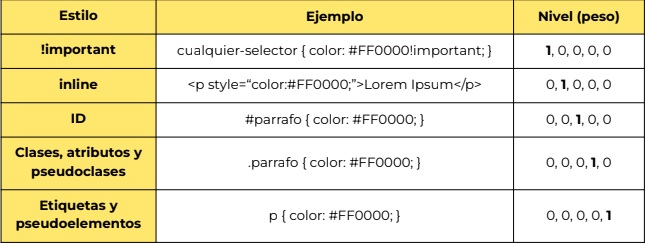
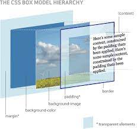

¿Que es CSS?
Sus siglas provienen de "Cascading Stylesheets", que en español seria Hojas de estilo en cascada. Esta es la siguiente tecnología que aprenderemos después de HTML. Mientras que HTML se utiliza para definir la estructura y la semántica del contenido, CSS se usa para darle estilo y posicionarlo visualmente. CSS se puede usar, por ejemplo, para cambiar la fuente, el color, el tamaño y el espacio del contenido, para formar múltiples columnas, agregar animaciones y otros elementos decorativos.
Sintaxis CSS
El selector apunta al elemento HTML que desea diseñar. El bloque de declaración contiene una o más declaraciones separadas por punto y coma. Cada declaración incluye un nombre de propiedad CSS y un valor, separados por dos puntos. Varias declaraciones CSS se separan con punto y coma, y los bloques de declaración están rodeados por llaves.
¿Como incorporamos la hoja de estilo?
Cuando un navegador lee una hoja de estilo, formateará el documento HTML de acuerdo con la información de la hoja de estilo.
Hay tres formas de insertar una hoja de estilo:
- CSS externo: En el head del documento HTML tenemos que incluir una referencia al archivo .css dentro del elemento "link". Es la forma más recomendada.
La referencia al archivo externo debe incluir la ruta completa, el nombre del archivo y su extensión si se encuentra en alguna subcarpeta dentro del proyecto.
- CSS interno: Incluimos la etiqueta style dentro del head en nuestro documento. Opción menos recomendable.
En el ejemplo anterior todas las etiquetas h1 tendrán color de fuente blanco y fondo de color rojo.
- CSS en linea: Dentro del atributo style=” ” incorporamos los estilos que se van a aplicar solo en esa misma etiqueta. Opción no recomendable.
Utilizando el atributo style dentro de la etiqueta le proporcionamos estilo al párrafo. Se pueden utilizar a la vez varias parejas de: propiedad: valor
Selectores en CSS
Indican el elemento al que se debe aplicar el estilo. La declaración indica "qué hay que hacer" y el selector indica "a quién hay que aplicarlo". Hay cuatro selectores básicos:
- Selector universal: Selecciona todos los
elementos de HTML. Se indica con un * (asterisco) y aplica el estilo a todos los elementos contenidos en el
documento HTML.
- selector de etiqueta o tipo: Se utiliza
para seleccionar una etiqueta específica. Este selector afecta a una etiqueta específica. Esto nos permite ser más precisos a la
hora de aplicar estilos a elementos particulares. Por ejemplo, a todas las etiquetas
h1 o p del documento.
- selector de clase: Se utiliza agregando
el atributo class a los elementos que
queramos aplicarles estilos. Se aplica con un punto (.) seguido del nombre que le asignemos al selector. Dentro
del documento HTML se lo referencia dentro de la etiqueta usando el atributo class,
con la siguiente estructura: class=“nombredelselector”
- selector de identificador (id): Similar a
.class pero solo se aplica a una etiqueta
individual. Se coloca con un numeral (#) en CSS y en el documento HTML se hace referencia al selector con id=“nombredelselector”, dentro de la etiqueta a la
cual se aplica:
Especificidad
La especificidad es el mecanismo mediante el cual los navegadores deciden qué valores de una propiedad CSS son más relevantes para un elemento. Esto influye en la manera en que los estilos son aplicados. La especificidad está basada en las reglas de coincidencia que están compuestas por diferentes tipos de selectores CSS. La especificidad sólo se aplica cuando el mismo elemento es objetivo de múltiples declaraciones. Según las reglas de CSS, en caso de que un elemento sea objeto de una declaración directa, está siempre tendrá preferencia sobre las reglas heredadas de su ancestro.
IMPORTANTE: Cuando varias declaraciones tienen igual especificidad, se aplicará al elemento la última declaración encontrada en el CSS.
Modelo de cajas CSS
El modelo de caja o “box model” es seguramente la característica más importante del lenguaje de hojas de estilos CSS, ya que condiciona el diseño de todas las páginas web. El Modelo de caja es un mecanismo mediante el cual CSS hace que todos los elementos de las páginas se representan mediante cajas rectangulares. Las cajas de una página se crean automáticamente. Cada vez que se inserta una etiqueta HTML, se crea una nueva caja rectangular que encierra los contenidos de ese elemento. Los navegadores crean y colocan las cajas de forma automática, pero CSS permite modificar todas sus características.

La representación básica del Modelo de caja es la siguiente, donde podemos observar varios conceptos importantes a diferenciar:
- El borde (border). En negro, es el límite que separa el interior del exterior del elemento.
- El margen (margin). En naranja, es la parte exterior del elemento, por fuera del borde.
- El relleno (padding). En verde, es la parte interior del elemento, entre el contenido y el borde.
- El contenido (content). En azul, es la parte interior del elemento, excluyendo el relleno.
El relleno y el margen son transparentes, por lo que en el espacio ocupado por el relleno se muestra el color o imagen de fondo (si están definidos) y en el espacio ocupado por el margen se muestra el color o imagen de fondo de su elemento padre (si están definidos). Si ningún elemento padre tiene definido un color o imagen de fondo, se muestra el color o imagen de fondo de la propia página (si están definidos).
